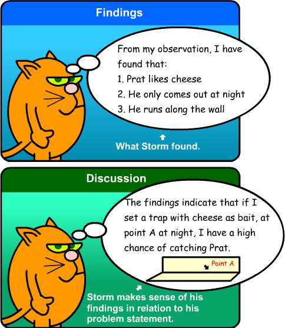

Difference Between the Findings and Discussion Sections There is no audio on this page.
Let's explore the differences between the Findings and the Discussion sections.
TIP
What to cover in the Discussion section:
- State the findings again (as a reminder to the reader)
- Discuss and interpret the findings, linking to other research, if possible
- Discuss the limitations of your research method, if any
Click here to go back to the previous page or click Next to continue.

